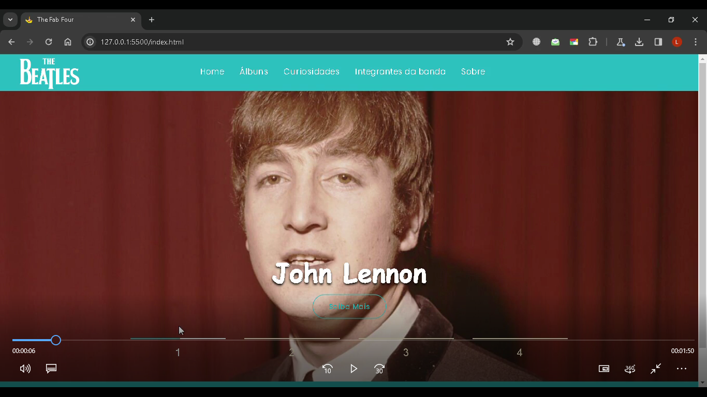

Beatles WebSite
Beatles Fanpage é um projeto web dedicado à banda britânica The Beatles. Criado como parte de um trabalho acadêmico, o site tem como objetivo oferecer aos fãs uma experiência interativa sobre a história e discografia da banda.
Desenvolvido com HTML, CSS e JavaScript, o site está hospedado no GitHub Pages. 🎶🚀
Monitoramento de Primatas
O projeto Monitoramento de Primatas é uma iniciativa da Universidade Unifeso em parceria com pesquisadores do Parque Nacional. Ele combina técnicas de Geoprocessamento e Machine Learning para rastrear o deslocamento dos primatas e prever suas chances de sobrevivência.
Utilizando os algoritmos K-Means e K-Nearest Neighbors (KNN), o sistema analisa padrões de movimento, agrupa indivíduos com base em características semelhantes e avalia fatores como idade, peso e exposição a áreas urbanas, contribuindo para estudos de conservação ambiental.